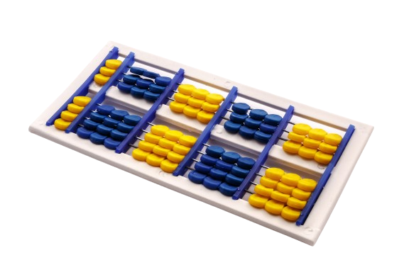

Markdown y MkDocs: apuntes escuetos¶
Aquí iré guardando los elementos que vaya necesitando saber sobre markdown, así como ejercicios que los aplican.
Snippets de código¶
-
En la propia línea¶
Se crean mediante un acento invertido ` para abrir y cerrar.
`Esto es un ejemplo.`
Resultado: Esto es un ejemplo
-
En bloque¶
Se crean mediante tres comillas ``` para abrir y cerrar
Ejemplo:
```python
def suma(a, b):
return a + b
```
Resultado:
def suma(a, b):
return a + b
Encabezados (títulos)¶
Funcionan por niveles (número de almohadillas)
# Encabezado1, ## Encabezado2, ### Encabezado3, ...
Énfasis¶
Cursiva: *texto en cursiva*
Negrita: *texto en negrita*
Tachado: ~~texto tachado~~
Listas¶
- Lista sin orden:¶
- Elemento 1
- Elemento 2
- Subelemento 1
- Subelemento 2
- Elemento 1
- Elemento 2
- Subelemento 1
- Subelemento 2
- Lista numerada:¶
1. Primer elemento
2. Segundo elemento
1. Subelemento 1
2. Subelemento 2
- Primer elemento
- Segundo elemento
- Subelemento 1
- Subelemento 2
Enlaces¶
[Texto del enlace](https://ejemplo.com)
Ejemplo: Enlace
Imágenes¶

Ejemplo:

Citas o notas¶
> Ejemplo de cita o nota.
Resultado:
Ejemplo de cita o nota.
Separadores¶
---
Resultado:
Tablas¶
|Área | Concepto |
|---------|---------------------------------|
|Topología| Grupo fundamental |
| Cálculo | Derivada lateral |
Resultado:
| Área | Concepto |
|---|---|
| Topología | Grupo fundamental |
| Cálculo | Derivada lateral |
Expresiones matemáticas¶
La fórmula cuadrática es:
$$ x = \frac{-b \pm \sqrt{b^2}-4ac}{2a}$$
Resultado: La fórmula cuadrática es:
Ejemplo de aplicación:¶
# Apuntes de Matemáticas - Álgebra Lineal
Bienvenido a los apuntes de **Álgebra Lineal** para el curso de primer semestre.
---
## 1. Introducción
La **Álgebra Lineal** estudia los espacios vectoriales y las transformaciones lineales.
Podemos definir un vector como una cantidad con dirección y magnitud.
---
## 2. Operaciones con vectores
### Lista ordenada
1. Suma de vectores
2. Resta de vectores
3. Producto por escalar
### Lista con subelementos
- Vectores en \(\mathbb{R}^n\)
- Vectores columna
- Vectores fila
- Espacios vectoriales
---
## 3. Ecuaciones y fórmulas
### Ecuación en línea
La fórmula de la energía es \( E = mc^2 \).
### Ecuación centrada
$$
x = \frac{-b \pm \sqrt{b^2 - 4ac}}{2a}
$$
---
## 4. Determinantes y matrices
Sea la matriz:
$$
A = \begin{bmatrix}
a & b \\
c & d
\end{bmatrix}
$$
El determinante es:
$$
\text{det}(A) = ad - bc
$$
---
## 5. Código de ejemplo
```python
def producto_punto(v1, v2):
return sum([x*y for x, y in zip(v1, v2)])
```
Resultado:
Apuntes de Matemáticas - Álgebra Lineal¶
Bienvenido a los apuntes de Álgebra Lineal para el curso de primer semestre.
1. Introducción¶
El Álgebra Lineal estudia los espacios vectoriales y las transformaciones lineales.
Podemos definir un vector como una cantidad con dirección y magnitud.
2. Operaciones con vectores¶
Lista ordenada¶
- Suma de vectores
- Resta de vectores
- Producto por escalar
Lista con subelementos¶
- Vectores en \(\mathbb{R}^n\)
- Vectores columna
- Vectores fila
- Espacios vectoriales
3. Ecuaciones y fórmulas¶
Ecuación en línea¶
La fórmula de la energía es \( E = mc^2 \).
Ecuación centrada¶
4. Determinantes y matrices¶
Sea la matriz:
El determinante es:
5. Código de ejemplo¶
def producto_punto(v1, v2):
return sum([x*y for x, y in zip(v1, v2)])
6. Plantillas para definiciones, teoremas, proposiciones...¶
-
Plantilla para Teorema con demostración desplegable
<div class="teorema"> <p><strong>Teorema X (Título del teorema):</strong></p> $$ \text{Aquí va la expresión matemática o formulación del teorema.} $$ <details> <summary><strong>Demostración</strong></summary> <p> $$\text{Aquí comienza la demostración, paso a paso, con todas tus fórmulas.}$$ $$\text{Puedes usar bloques } \frac{a}{b}, \lim_{n \to \infty}, \text{etc.}$$ </p> </details> </div> -
Ejemplo de aplicación:
Teorema 1 (Caracterización de la continuidad uniforme):
$$ f: A \to \mathbb{R} \text{ es uniformemente continua } \iff \forall (x_n), (y_n) \text{ tales que } \lim(x_n - y_n) = 0 \Rightarrow \lim(f(x_n) - f(y_n)) = 0 $$Demostración
$$\text{Supongamos que } f \text{ no es uniformemente continua.}$$ $$\exists \varepsilon_0 > 0 \text{ tal que } \forall \delta > 0, \exists x_0, y_0 \text{ con } |x_0 - y_0| < \delta, |f(x_0) - f(y_0)| \geq \varepsilon_0.$$ $$\text{Tomando } \delta_n = \frac{1}{n}, \text{ se obtiene la contradicción.}$$
- Plantilla de definición:
<div class="definicion">
<p><strong>Definición X (Nombre de la definición):</strong></p>
<p>
Aquí va el texto de la definición. Puedes usar notación matemática como
\( f : A \to B \) o bloques grandes:
</p>
$$
\text{Definición formal: } A := \{x \in \mathbb{R} \mid x > 0\}
$$
</div>
- Plantilla de proposición:
<div class="proposicion">
<p><strong>Proposición X (Nombre de la proposición):</strong></p>
$$
\text{Aquí va el enunciado de la proposición con notación matemática.}
$$
<details>
<summary><strong>Demostración</strong></summary>
<p>
$$\text{Aquí va la demostración paso a paso.}$$
</p>
</details>
</div>
- Plantilla de corolario:
<div class="corolario"> <p><strong>Corolario X (Nombre del corolario):</strong></p> $$ \text{Enunciado del corolario que se deduce directamente de un teorema o proposición.} $$ <details> <summary><strong>Demostración</strong></summary> <p> $$\text{Justificación breve del corolario, muchas veces trivial.}$$ </p> </details> </div>